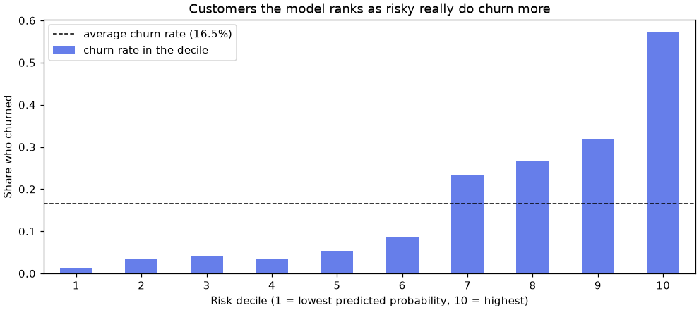

🧪 Lesson 1.1: The scikit-learn Estimator API
Train your first machine-learning models on real-looking customer data, and learn the four method names that every model in scikit-learn shares.
🎯 Learning Objectives
By the end of this lesson, you will be able to:
- Turn a table into a feature matrix
Xand a targety, and hold out a test set withtrain_test_split - Use the estimator methods
fit,predict,predict_probaandscore, and read learned attributes such ascoef_ - Use a transformer with
fitandtransform, fitting it on the training data only - Measure a
DummyClassifierbaseline and judge whether a real model beats it - Swap one model for another without changing the rest of your code
In This Lesson
🧭 Learning from Examples
Pinecrest Outfitters, the fictional outdoor-gear retailer whose data you use throughout this course, has a problem every retailer has: some customers quietly stop buying. A customer who is about to leave might stay for a well-timed discount or a phone call, but Pinecrest cannot call all 6,000 of its active customers. It needs a short list of the people most likely to leave.
You could write rules by hand: "if nobody has bought anything in 150 days, flag them." Machine learning takes a different route. You show a program thousands of past customers together with what happened to each one, and it works out the rules itself. That program is called a model, and the step where it works out the rules is called training or fitting.
💡 Mental Model: The New Hire and the Case Files
Picture a new hire at Pinecrest's customer-care desk. On day one they get a box of old case files: each one describes a customer (how long they had been a member, how often they bought, how many complaints they made) and ends with a note saying whether that customer left. The new hire reads the files and develops a feel for the warning signs. That is fit.
Next, the manager hands over fresh files with the ending torn off and asks, "Who will leave?" That is predict. Finally, the manager checks the answers against what really happened and gives a grade. That is score. The one rule that makes the grade mean anything: the files used for grading must be ones the new hire has never seen.
scikit-learn (imported as sklearn) is the standard Python library for this kind of machine learning. Its best feature is not any single algorithm. It is that every algorithm, from the simplest to the most elaborate, uses the same handful of method names. Learn them once in this lesson and you can use any of the dozens of models in the rest of the course.
🤔 Why This Matters
Most of the ideas in this course (cross-validation, pipelines, tuning, explanations) are built on top of the estimator API. Tools that tune or explain a model only need to know that it has fit and predict. When the API is second nature, the later lessons read as small variations on a theme instead of a pile of new spells.
📂 Features and a Target
Open a new notebook in the project folder you set up in Lesson 0.1. Check your scikit-learn version and load the customer table.
import pandas as pd
import sklearn
print(sklearn.__version__)
customers = pd.read_csv("data/customers_churn.csv")
print(customers.shape)
print(customers[["customer_id", "tenure_months", "orders_12m", "days_since_last_order", "churned"]].head())Output
1.9.1
(6000, 20)
customer_id tenure_months orders_12m days_since_last_order churned
0 C100001 31 11 77 0
1 C100002 41 12 24 0
2 C100003 4 2 24 0
3 C100004 5 5 31 0
4 C100005 65 11 40 0Each row is one customer as of June 30, 2025. The columns describe their previous 12 months, and the last column, churned, records what happened next: 1 means they made no purchase in the following six months. This is the column you want to predict.
print(customers["churned"].value_counts())
print(f"churn rate: {customers['churned'].mean():.1%}")Output
churned
0 5008
1 992
Name: count, dtype: int64
churn rate: 16.5%About one customer in six churned. Remember that number: it is about to become important.
🔑 Key Terms
Sample: one row, here one customer. Feature: a column the model may use as input, such as orders_12m. Target (or label): the column to predict, churned. Classification: predicting a category, like churned or stayed. Regression: predicting a number, like units sold.
scikit-learn expects the features as a two-dimensional table called X (capital, because it is a matrix: one row per sample, one column per feature) and the target as a one-dimensional y (lowercase, because it is a single column). For this first lesson, use only numeric columns that have no missing values. Text columns such as home_store and columns with gaps such as email_opens_90d need preparation first, which is what Lesson 2.1 is about.
features = ["tenure_months", "orders_12m", "spend_12m", "avg_order_value", "days_since_last_order",
"returns_12m", "return_rate", "support_tickets_12m", "discount_share", "app_user"]
X = customers[features]
y = customers["churned"]
print(X.shape, y.shape)
print(X.isna().sum().sum(), "missing values in X")Output
(6000, 10) (6000,)
0 missing values in X⚠️ Not Every Column Belongs in X
The table also has a cancellation_reason column. It is filled in only when a customer closes their account, which happens after the date the features describe, so it is only ever filled for customers who churned. A model given that column would look brilliant in testing and be useless in real life, because on the day you need a prediction the column is always empty. This trap is called target leakage, and Lesson 1.2 is about catching it. For now, the rule of thumb: only use information you would really have at the moment you make the prediction.
✂️ Hold Out a Test Set
Remember the manager's rule: grade with files the new hire has never seen. In code, you split the rows into a training set the model learns from and a test set you lock away until the end. train_test_split does it in one call.
from sklearn.model_selection import train_test_split
X_train, X_test, y_train, y_test = train_test_split(
X, y, test_size=0.25, stratify=y, random_state=42
)
print(X_train.shape, X_test.shape)
print(f"churn rate train {y_train.mean():.3f} test {y_test.mean():.3f}")Output
(4500, 10) (1500, 10)
churn rate train 0.165 test 0.165Three arguments are doing real work here:
test_size=0.25keeps a quarter of the customers (1,500) for testing.stratify=ymakes both parts keep the same share of churners, 16.5%. Without it, a random split could, by bad luck, put noticeably more churners on one side.random_state=42fixes the shuffle so that you get exactly the same split every time you run the cell, and the same one as on this page. The number itself does not matter; using a fixed one does. This course uses42everywhere.
The four results come back in a fixed order: the two X parts, then the two y parts. Lesson 1.2 goes deeper into splitting: splitting by time, keeping a separate validation set, and the leaks that sneak through a careless split.
🎯 A Baseline That Knows Nothing
Before you train anything clever, find out how well you can do without learning anything at all. scikit-learn has a model for exactly that: DummyClassifier. With strategy="most_frequent" it ignores the features completely and always predicts the most common class it saw during training.
from sklearn.dummy import DummyClassifier
baseline = DummyClassifier(strategy="most_frequent")
baseline.fit(X_train, y_train)
print(baseline.predict(X_test)[:10])
print(f"baseline accuracy: {baseline.score(X_test, y_test):.3f}")Output
[0 0 0 0 0 0 0 0 0 0]
baseline accuracy: 0.835Predicting "nobody churns" for every customer is right 83.5% of the time, because 83.5% of customers did not churn. It is also completely useless: it never finds a single customer at risk. That is why a baseline matters. If someone tells you their churn model is "83% accurate", the honest reply is "so is doing nothing".
✅ Make This a Habit
Every model in this course is compared with a baseline first. A model earns its place only by beating it, and by more than a rounding error. Lesson 1.4 adds better yardsticks than accuracy for exactly this situation, where one class is much rarer than the other.
🧩 The Estimator API
Look again at those three lines: create the object, fit it, then predict or score. Every model in scikit-learn works this way. scikit-learn calls them estimators, and the shared set of method names is the estimator API.
| Step | Code | What happens |
|---|---|---|
| Create | model = DummyClassifier(strategy="most_frequent") | Settings (called hyperparameters) go into the constructor. Nothing is learned yet. |
| Fit | model.fit(X_train, y_train) | The model learns from the training data and stores what it learned on itself. It returns the model, so calls can be chained. |
| Predict | model.predict(X_new) | One prediction per row of X_new. |
| Score | model.score(X_test, y_test) | Predicts X_test and compares with y_test. For classifiers the score is accuracy; for regressors it is R². |
Two naming conventions tell you a lot about any estimator. Settings you chose are readable with get_params(). Things the model learned during fit are stored in attributes whose names end with an underscore, like classes_. The underscore is a promise: this attribute exists only after fitting.
print(baseline.classes_)
print(baseline.get_params())Output
[0 1]
{'constant': None, 'random_state': None, 'strategy': 'most_frequent'}classes_ holds the labels the model saw in y_train. The parameters show the strategy you chose and two others left at their defaults.
🔧 Transformers: fit, then transform
Some estimators do not predict anything. They change data. These are called transformers, and they swap predict for transform. The most common one is StandardScaler, which rescales each column to have a mean of 0 and a standard deviation of 1.
Why bother? The features live on wildly different scales: spend_12m runs into the thousands of dollars while discount_share is a fraction between 0 and 1. Many models, including the logistic regression you are about to train, learn faster and more reliably when every feature is on a similar scale.
from sklearn.preprocessing import StandardScaler
scaler = StandardScaler()
scaler.fit(X_train)
print(scaler.mean_.round(2)[:4])
print(scaler.scale_.round(2)[:4])Output
[ 41.48 5. 594.13 139.77]
[ 30.53 3.23 414.47 102.85]fit learned one mean and one standard deviation per column (the first four are shown: tenure, orders, spend and average order value). Note the trailing underscores again. Now transform applies those numbers to any data you give it:
X_train_scaled = scaler.transform(X_train)
X_test_scaled = scaler.transform(X_test)
print(type(X_train_scaled), X_train_scaled.shape)
print("largest column mean, train:", abs(X_train_scaled.mean(axis=0)).max().round(3))
print("column means, test:", X_test_scaled.mean(axis=0).round(2)[:4])Output
<class 'numpy.ndarray'> (4500, 10)
largest column mean, train: 0.0
column means, test: [0.04 0.01 0.04 0.04]The training columns now have a mean of exactly 0. The test columns are close to 0 but not exactly, and that is correct. The test set was scaled with the training set's numbers, just as a new customer next month will be. The scaler must never peek at the test data: fit on training data only, then transform both.
💡 Keep the Column Names: set_output
By default a transformer returns a plain NumPy array, so the column names are lost. Ask for pandas output instead and you keep them, which makes everything after this easier to read:
scaler.set_output(transform="pandas")
X_train_scaled = scaler.transform(X_train)
X_test_scaled = scaler.transform(X_test)
print(X_train_scaled[["tenure_months", "days_since_last_order"]].head(3).round(3))Output
tenure_months days_since_last_order
1556 -1.326 -0.316
965 0.083 -0.316
5145 -1.227 -0.763The index values (1556, 965, 5145) are the original row numbers, shuffled by the split. A scaled value of -1.326 means "1.3 standard deviations below the average tenure".
There is a shortcut, fit_transform, that fits and transforms in one call. Use it on the training data only. Lesson 2.2 shows how a Pipeline remembers the right order for you, so that the test data can never be fitted by accident.
🚀 A First Real Model
Logistic regression is the classic first model for a yes-or-no target. It gives each feature a weight, adds up the weighted features, and turns the total into a probability between 0 and 1. Lesson 3.1 opens it up fully; for now, treat it as one more estimator with the same three steps.
from sklearn.linear_model import LogisticRegression
model = LogisticRegression()
model.fit(X_train_scaled, y_train)
print(f"logistic regression accuracy: {model.score(X_test_scaled, y_test):.3f}")Output
logistic regression accuracy: 0.84884.8% against the baseline's 83.5%. On accuracy alone, that looks like barely an improvement. But accuracy only counts right and wrong answers at one fixed cut-off. The model can tell you more than a yes or no: predict_proba gives the probability of each class.
print(model.predict(X_test_scaled)[:10])
proba = model.predict_proba(X_test_scaled)
print(proba[:3].round(3))Output
[0 1 0 0 0 0 0 0 0 0]
[[0.937 0.063]
[0.47 0.53 ]
[0.895 0.105]]Each row of proba has two numbers that add up to 1: the probability of class 0 (stays) and of class 1 (churns), in the order of model.classes_. predict simply says "1" whenever the second number is above 0.5. The second test customer gets 0.53, just over the line.
For Pinecrest's purpose, the probabilities are what matter. Nobody needs a perfect yes or no; they need the customers sorted from most to least at risk. To see whether that ranking is any good, sort the 1,500 test customers by predicted probability, cut them into ten equal groups (deciles), and check how many in each group really churned.
import matplotlib.pyplot as plt
risk = pd.DataFrame({"churn_probability": proba[:, 1], "churned": y_test.to_numpy()})
risk["risk_decile"] = pd.qcut(risk["churn_probability"].rank(method="first"), 10, labels=range(1, 11))
by_decile = risk.groupby("risk_decile", observed=True)["churned"].mean()
print(by_decile.round(3))
fig, ax = plt.subplots(figsize=(9, 4), layout="constrained")
by_decile.plot.bar(ax=ax, color="#667eea", rot=0, label="churn rate in the decile")
ax.axhline(y_test.mean(), color="black", linestyle="--", linewidth=1,
label=f"average churn rate ({y_test.mean():.1%})")
ax.set_xlabel("Risk decile (1 = lowest predicted probability, 10 = highest)")
ax.set_ylabel("Share who churned")
ax.set_title("Customers the model ranks as risky really do churn more")
ax.legend()
plt.show()Output
risk_decile
1 0.013
2 0.033
3 0.040
4 0.033
5 0.053
6 0.087
7 0.233
8 0.267
9 0.320
10 0.573
Name: churned, dtype: float64
Now the model looks very different. If Pinecrest calls the 150 customers in the top decile, more than half of the calls reach someone who really was about to leave, compared with one in six for a random list. The baseline cannot rank anyone at all. "Barely better on accuracy" and "very useful" are both true, which is why Lesson 1.4 spends a whole lesson on choosing the right measure.
👀 What Did It Learn?
A fitted logistic regression stores one weight per feature in coef_ (underscore: learned). Because the features were scaled, the weights are roughly comparable: a positive weight pushes towards churn, a negative one away from it.
coefs = pd.Series(model.coef_[0], index=features).sort_values()
print(coefs.round(2))Output
app_user -0.34
orders_12m -0.31
tenure_months -0.12
spend_12m -0.12
returns_12m -0.02
avg_order_value 0.00
return_rate 0.07
support_tickets_12m 0.40
discount_share 0.67
days_since_last_order 0.88
dtype: float64The story makes sense: a long gap since the last order, a heavy reliance on discounts and many support tickets raise the risk; app users and frequent buyers are safer. Treat this as a first impression, not a conclusion. Weights can mislead when features overlap (here spend_12m is almost exactly orders times average order value), and Module 7 covers trustworthy ways to explain a model.
🔁 Swapping Models
Here is the payoff of a shared API. Because every classifier has fit and score, you can put several in a dictionary and evaluate them with one loop. You have not met decision trees or random forests yet (Module 5); you do not need to understand them to use them.
from sklearn.tree import DecisionTreeClassifier
from sklearn.ensemble import RandomForestClassifier
candidates = {
"baseline": DummyClassifier(strategy="most_frequent"),
"logistic regression": LogisticRegression(),
"decision tree": DecisionTreeClassifier(max_depth=4, random_state=42),
"random forest": RandomForestClassifier(n_estimators=200, min_samples_leaf=5, random_state=42),
}
for name, estimator in candidates.items():
estimator.fit(X_train_scaled, y_train)
print(f"{name:20s} {estimator.score(X_test_scaled, y_test):.3f}")Output
baseline 0.835
logistic regression 0.848
decision tree 0.864
random forest 0.873Four different algorithms, one loop, zero changes to the rest of the code. The tree-based models do a little better here, which hints that the true pattern is not a simple weighted sum (Lesson 5.1 shows why). The two tree models get random_state=42 because they use randomness while training; logistic regression does not need one.
⚠️ One Test Set, Many Peeks
Comparing four models on the same test set is fine for a first look. Doing it over and over (tweak, re-score, tweak again) slowly turns the test set into training data, because you are learning from it. Lessons 1.2 and 1.3 show how to compare models without using up the test set.
⚠️ Common Mistakes
These are the errors people meet in their first week with scikit-learn. Each message is precise once you know how to read it.
1. Predicting Before Fitting
from sklearn.exceptions import NotFittedError
fresh = LogisticRegression()
fresh.predict(X_test_scaled)Error
NotFittedError: This LogisticRegression instance is not fitted yet. Call 'fit' with appropriate arguments before using this estimator.What it means: creating a model only stores its settings; it has learned nothing yet, so there are no weights to predict with. Fix: call fit first. In a notebook this often means you re-ran the cell that creates the model, which replaced your fitted model with a fresh one.
2. Passing a Single Column as a Series
LogisticRegression().fit(X_train["days_since_last_order"], y_train)Error
ValueError: Expected a 2-dimensional container but got <class 'pandas.Series'> instead. Pass a DataFrame containing a single row (i.e. single sample) or a single column (i.e. single feature) instead.What it means: X must always be a table, even with one feature. Single brackets give a Series (one dimension). Fix: use double brackets, X_train[["days_since_last_order"]], which gives a one-column DataFrame.
3. A Text Column in X
LogisticRegression().fit(customers[["tenure_months", "home_store"]], y)Error
ValueError: could not convert string to float: 'Bend'What it means: models do arithmetic, and "Bend" is not a number. Fix: leave text columns out for now; Lesson 2.1 turns categories into numbers with encoders.
4. Missing Values in X
LogisticRegression().fit(customers[["tenure_months", "email_opens_90d"]], y)Error
ValueError: Input X contains NaN.
LogisticRegression does not accept missing values encoded as NaN natively. For supervised learning, you might want to consider sklearn.ensemble.HistGradientBoostingClassifier and Regressor which accept missing values encoded as NaNs natively. Alternatively, it is possible to preprocess the data, for instance by using an imputer transformer in a pipeline or drop samples with missing values. See https://scikit-learn.org/stable/modules/impute.html You can find a list of all estimators that handle NaN values at the following page: https://scikit-learn.org/stable/modules/impute.html#estimators-that-handle-nan-valuesWhat it means: email_opens_90d is empty for 537 customers, and most models refuse missing values. The message even lists your options. Fix: fill the gaps with an imputer (Lesson 2.1) or use a model that handles them. Dropping the rows is the last resort: those customers might be the interesting ones.
5. Skipping the Scaler
Train the same logistic regression on the unscaled features and scikit-learn warns you. In a notebook the warning appears in a pink box under the cell; this code catches it so you can read it:
import warnings
with warnings.catch_warnings(record=True) as caught:
warnings.simplefilter("always")
LogisticRegression().fit(X_train, y_train)
print(caught[0].category.__name__)
print(str(caught[0].message).splitlines()[0])Output
ConvergenceWarning
lbfgs failed to converge after 100 iteration(s) (status=1):What it means: the solver that finds the weights ran out of steps before settling, because features measured in thousands and features measured in fractions pull it around unevenly. The model you get may be fine or may be half-finished. Fix: scale the features. Raising max_iter also silences the warning, but scaling fixes the cause.
6. Fitting the Scaler on the Test Set
leaky = StandardScaler().fit_transform(X_test)
print(leaky[:2, 4].round(3))
print(X_test_scaled["days_since_last_order"].head(2).round(3).to_numpy())Output (no error, and that is the problem)
[-0.349 3.195]
[-0.35 3.218]What happened: fit_transform on the test set computed new means and standard deviations from the test data, so the same customer gets a different scaled value than the model was trained to expect. Here the difference is small; with a smaller or unusual test set it can be large, and either way your score no longer reflects how the model will treat genuinely new data. Fix: fit (or fit_transform) on X_train only, and plain transform on everything else.
🛠️ Project: The Churn-Risk Shortlist
Pinecrest's customer-care team can make 50 retention calls this month. Your job: build a model, use it to choose the 50 test customers most likely to churn, and check how many of them really did. Because the test set holds known outcomes, you can measure how good your list would have been. Work in a new notebook called lesson_1_1_project, or a script called shortlist.py. Allow about 40 minutes.
🛠️ Step 1: Load, frame and split, keeping the IDs (5 min)
To print a list of names later, you need each test row's customer_id. Split the whole table first, then take X and y from each part, so the IDs stay lined up with their rows.
import pandas as pd
from sklearn.model_selection import train_test_split
customers = pd.read_csv("data/customers_churn.csv")
features = ["tenure_months", "orders_12m", "spend_12m", "avg_order_value", "days_since_last_order",
"returns_12m", "return_rate", "support_tickets_12m", "discount_share", "app_user"]
train, test = train_test_split(customers, test_size=0.25, stratify=customers["churned"], random_state=42)
X_train, y_train = train[features], train["churned"]
X_test, y_test = test[features], test["churned"]
print(len(train), len(test), test["customer_id"].head(3).tolist())Output
4500 1500 ['C102112', 'C103063', 'C101159']Same random_state, same stratification, same rows: this split matches the one in the lesson.
🛠️ Step 2: Measure the baseline (5 min)
A shortlist needs a ranking, so the baseline here is a random list. If you pick 50 test customers at random, how many churners should you expect?
from sklearn.dummy import DummyClassifier
baseline = DummyClassifier(strategy="most_frequent").fit(X_train, y_train)
print(f"baseline accuracy: {baseline.score(X_test, y_test):.3f}")
expected_random = 50 * y_test.mean()
print(f"churners expected in a random list of 50: {expected_random:.1f}")Output
baseline accuracy: 0.835
churners expected in a random list of 50: 8.3Note the chained call: fit returns the estimator, so DummyClassifier(...).fit(...) creates and fits in one line.
🛠️ Step 3: Scale and train two models (10 min)
Fit the scaler on the training rows only, then train a logistic regression and a random forest and compare their accuracy with the baseline.
from sklearn.preprocessing import StandardScaler
from sklearn.linear_model import LogisticRegression
from sklearn.ensemble import RandomForestClassifier
scaler = StandardScaler().set_output(transform="pandas")
X_train_s = scaler.fit_transform(X_train)
X_test_s = scaler.transform(X_test)
logreg = LogisticRegression().fit(X_train_s, y_train)
forest = RandomForestClassifier(n_estimators=200, min_samples_leaf=5, random_state=42).fit(X_train_s, y_train)
for name, m in [("logistic regression", logreg), ("random forest", forest)]:
print(f"{name:20s} accuracy {m.score(X_test_s, y_test):.3f}")Output
logistic regression accuracy 0.848
random forest accuracy 0.873🛠️ Step 4: Rank the test customers (10 min)
Add each model's churn probability to the test table, then take the 50 highest for each model. nlargest sorts and slices in one step.
scored = test[["customer_id", "days_since_last_order", "support_tickets_12m", "churned"]].copy()
scored["p_logreg"] = logreg.predict_proba(X_test_s)[:, 1]
scored["p_forest"] = forest.predict_proba(X_test_s)[:, 1]
top_logreg = scored.nlargest(50, "p_logreg")
top_forest = scored.nlargest(50, "p_forest")
print(top_forest[["customer_id", "days_since_last_order", "support_tickets_12m", "p_forest"]].head().round(3))Output
customer_id days_since_last_order support_tickets_12m p_forest
5888 C105889 185 1 0.898
3227 C103228 250 0 0.857
769 C100770 364 2 0.851
767 C100768 364 0 0.849
542 C100543 182 2 0.844🛠️ Step 5: Check the lists against what happened (5 min)
The test set knows who really churned, so you can grade both shortlists. The number that matters to the care team is how many of the 50 calls reach a real churner.
for name, top in [("logistic regression", top_logreg), ("random forest", top_forest)]:
hits = top["churned"].sum()
print(f"{name:20s} {hits} of 50 really churned ({hits / expected_random:.1f}x a random list)")Output
logistic regression 33 of 50 really churned (4.0x a random list)
random forest 41 of 50 really churned (5.0x a random list)A random list of 50 would reach about 8 churners. The forest's list reaches 41, five times as many, and even the simpler model reaches four times as many. That is the number to take to the care team, not the accuracy.
🛠️ Step 6: Save the shortlist and write the summary (5 min)
Save the better list for the care team (IDs and probabilities only; they do not need the answer column) and print a short summary built from your own variables.
best = top_forest[["customer_id", "p_forest"]].rename(columns={"p_forest": "churn_probability"})
best.round(3).to_csv("churn_shortlist.csv", index=False)
print(f"""Churn-risk shortlist
Test customers scored : {len(test):,}
Baseline accuracy : {baseline.score(X_test, y_test):.3f}
Forest accuracy : {forest.score(X_test_s, y_test):.3f}
Real churners in list : {top_forest['churned'].sum()} of 50 (random list: {expected_random:.1f})
Saved : churn_shortlist.csv ({len(best)} rows)""")Output
Churn-risk shortlist
Test customers scored : 1,500
Baseline accuracy : 0.835
Forest accuracy : 0.873
Real churners in list : 41 of 50 (random list: 8.3)
Saved : churn_shortlist.csv (50 rows)✅ Project Completion Checklist
- Your split has 4,500 training and 1,500 test customers, and the first test ID is
C102112 - The scaler was fitted on
X_trainonly and applied toX_testwithtransform - You know the baseline accuracy (0.835) and the expected churners in a random list (8.3)
- Both shortlists have 50 customers, ranked by predicted probability
- You counted how many listed customers really churned and compared with the random list
churn_shortlist.csvholds IDs and probabilities, and no outcome column
🏋️ Hands-on Exercises
Try each one before opening the solution. These continue in the project notebook, so X_train, X_test_s and friends already exist.
🏋️ Exercise 1: Other Ways to Know Nothing
DummyClassifier has other strategies. Fit one with strategy="stratified" (it guesses randomly, in the training proportions; give it random_state=42) and one with strategy="prior". Print each one's test accuracy. Which is lower, and why does a strategy that sometimes says "churn" score worse than one that never does?
💡 Hint
If you guess "churn" 16.5% of the time at random, how often will those guesses land on a real churner?
✅ Solution
for strategy in ["stratified", "prior"]:
dummy = DummyClassifier(strategy=strategy, random_state=42).fit(X_train, y_train)
print(f"{strategy:10s} {dummy.score(X_test, y_test):.3f}")Output
stratified 0.716
prior 0.835"prior" predicts the most frequent class, like "most_frequent" (they differ only in predict_proba). "stratified" guesses at random, so its "churn" guesses are mostly wrong (only about one in six lands on a churner), and every wrong guess costs accuracy. Guessing randomly is worse than not guessing, which is one more reason accuracy alone is a poor judge on imbalanced data.
🏋️ Exercise 2: Deeper Trees
Train DecisionTreeClassifier(max_depth=d, random_state=42) for d in [2, 4, 8, None] (None means "grow until every leaf is pure") on the scaled data. Print both the training accuracy and the test accuracy for each. What happens to the gap between them as the tree grows?
💡 Hint
score works on any data: tree.score(X_train_s, y_train) grades the model on the files it studied.
✅ Solution
from sklearn.tree import DecisionTreeClassifier
for depth in [2, 4, 8, None]:
tree = DecisionTreeClassifier(max_depth=depth, random_state=42).fit(X_train_s, y_train)
print(f"max_depth={str(depth):5s} train {tree.score(X_train_s, y_train):.3f} test {tree.score(X_test_s, y_test):.3f}")Output
max_depth=2 train 0.856 test 0.851
max_depth=4 train 0.873 test 0.864
max_depth=8 train 0.916 test 0.862
max_depth=None train 1.000 test 0.821An unlimited tree scores a perfect 1.000 on the training data: it has memorized every case file. Its test score is the lowest of the four. That gap between training and test performance is overfitting, and it is the single most important idea in Module 6. A score on training data tells you almost nothing.
🏋️ Exercise 3: The Same API for Regression
Load data/weekly_demand.csv. Predict units_sold from ["price", "discount_pct", "promo", "holiday_week", "avg_high_temp_f", "store_sqft"]. Split with test_size=0.25, random_state=42 (no stratify: the target is a number). Compare DummyRegressor() (it always predicts the training mean) with LinearRegression() using score. For regressors, score is R²: 1 is perfect and 0 is "no better than the mean".
💡 Hint
Import DummyRegressor from sklearn.dummy and LinearRegression from sklearn.linear_model. The code is identical in shape to the classification code; only the class names change.
✅ Solution
from sklearn.dummy import DummyRegressor
from sklearn.linear_model import LinearRegression
demand = pd.read_csv("data/weekly_demand.csv")
demand_features = ["price", "discount_pct", "promo", "holiday_week", "avg_high_temp_f", "store_sqft"]
Xd_train, Xd_test, yd_train, yd_test = train_test_split(
demand[demand_features], demand["units_sold"], test_size=0.25, random_state=42
)
for name, reg in [("mean baseline", DummyRegressor()), ("linear regression", LinearRegression())]:
reg.fit(Xd_train, yd_train)
print(f"{name:18s} R2 = {reg.score(Xd_test, yd_test):.3f}")Output
mean baseline R2 = -0.000
linear regression R2 = 0.281The baseline scores about 0 (slightly below, because the training mean is not exactly the test mean). The linear model explains only part of the variation in units sold. That is not a failure of the API: these six columns leave out the most important fact, which product it is (socks sell far more units than tents). Lesson 2.1 shows how to give the model category columns like product_id.
🏋️ Exercise 4: Inside a Transformer (Stretch)
Fit a MinMaxScaler (from sklearn.preprocessing) on X_train. It rescales each column to run from 0 to 1. Then: (a) print the smallest and largest value of the transformed training data; (b) do the same for the transformed test data and explain why the test data can fall outside 0 to 1; (c) use inverse_transform to undo the scaling of the test data and check with np.allclose that you got the original numbers back.
💡 Hint
The scaler learned each column's minimum and maximum from the training rows (look at data_min_ and data_max_). A test customer can be newer, or busier, than anyone in the training set.
✅ Solution
import numpy as np
from sklearn.preprocessing import MinMaxScaler
mm = MinMaxScaler().fit(X_train)
train_mm = mm.transform(X_train)
test_mm = mm.transform(X_test)
print("train:", train_mm.min().round(3), train_mm.max().round(3))
print("test :", test_mm.min().round(3), test_mm.max().round(3))
print(np.allclose(mm.inverse_transform(test_mm), X_test))Output
train: 0.0 1.0
test : 0.0 1.25
TrueThe training data spans exactly 0 to 1 by construction. Some test customers lie beyond the training extremes, so they land above 1: perfectly normal, and a good reason not to assume scaled values are bounded. inverse_transform reverses the arithmetic exactly (up to floating-point rounding), which is what np.allclose confirms.
🎯 Quick Quiz
🎯 Check Your Understanding
Question 1: What does this print?
quiz_scaler = StandardScaler().fit([[1], [2], [3]])
print(quiz_scaler.transform([[5]]).round(3))Question 2: On the churn test set, the baseline scores 0.835 accuracy and logistic regression scores 0.848. What is the best conclusion?
Question 3: You have X_train and X_test. Which is the correct way to scale them?
Question 4: After fitting, a model has attributes named coef_ and classes_. What does the trailing underscore tell you?
Question 5: A churn classifier was trained with classes 0 and 1. What is the shape of model.predict_proba(X_test) for 1,500 test customers?
❓ Common Questions at This Stage
Why is it always random_state=42?
Any fixed integer makes a random process repeatable: the same split, the same forest, the same numbers as this page. 42 is just a popular choice (it is a joke from The Hitchhiker's Guide to the Galaxy). Using one fixed value everywhere means your output matches the lesson. In real projects you also try several different seeds to check that a result is not a lucky accident; Lesson 1.3 shows how.
My numbers differ from the page in the third decimal place. Is something wrong?
Check the version first: print(sklearn.__version__) should say 1.9. Different versions of scikit-learn, NumPy or your operating system's math libraries can change the last digit of some results, especially for models that use randomness. Differences in the first or second decimal usually mean the split or the features differ: compare your X_train.shape and first test ID with the project step.
Do decision trees and random forests need scaled features?
No. A tree asks questions like "is days_since_last_order above 150?", and the answer is the same whatever the units. Scaling does not hurt them, which is why the comparison loop could use the scaled data for every model. Models built on distances or weighted sums (logistic regression, k-nearest neighbors, support vector machines, neural networks) do need it.
Should I use a notebook or a script?
Both work, and every code block on this page runs in either. Notebooks are great for exploring because you see each result as you go. Scripts are better once a workflow is settled and you want to rerun it from top to bottom. A common pattern, used in the MLOps lessons, is to explore in a notebook and then move the finished steps into a script.
Is logistic regression "machine learning" or just statistics?
Both. The model is a century old in statistics. What makes this machine learning is the workflow around it: learning from examples, judging the result on held-out data, and caring mainly about how well it predicts new cases. Some of the most useful models in this course are simple ones used carefully.
🌟 Going Further: Bonus Challenge
Accuracy uses a fixed cut-off of 0.5. Write a loop that tries cut-offs from 0.1 to 0.9 on the logistic regression's test probabilities and prints, for each one, how many customers would be flagged and how many of those really churned. Where would you set the cut-off if a retention offer costs $15 and reaching a real churner is worth $60? Write down your reasoning; Lesson 1.4 gives you the vocabulary (precision, recall, thresholds) to make it precise.
📓 Learning Journal
Take five minutes to write in your learning journal (the journal.md file you started in Lesson 0.1, or a paper notebook). Jot down:
- Key concepts you learned today
- Techniques that clicked (and the ones that have not, yet)
- Questions or confusion to come back to
- Ideas to try on your own
- Progress and feelings: how did this lesson go for you?
✍️ This lesson's prompt: Explain the new hire and the case files in your own words, using the words fit, predict and score. Then write down the two numbers from your project that tell the most honest story about your model: the baseline accuracy, and how many of your 50 shortlisted customers really churned. Why are those two better together than either alone?
📝 Lesson Summary
🎓 Key Takeaways
- Machine learning learns rules from examples: features
X(a table) and a targety(one column) - Every scikit-learn estimator follows the same pattern: create with settings,
fit, thenpredictorscore - Transformers such as
StandardScalerusefitandtransform; fit on the training data only - Attributes ending in
_(coef_,mean_,classes_) are learned duringfit train_test_split(..., stratify=y, random_state=42)holds out a test set that keeps the class balance and is repeatable- A
DummyClassifierbaseline shows what "knowing nothing" scores; with 16.5% churners, that is 83.5% accuracy predict_probagives probabilities that can rank customers, which is often worth more than yes-or-no predictionsset_output(transform="pandas")keeps column names through transformers
🏆 What You've Accomplished
- You framed a real business question as a classification problem
- You trained four kinds of model with the same few lines of code
- You showed with a chart that a model whose accuracy is close to the baseline's can still rank customers very well
- You met six beginner mistakes and can read the messages they produce
- You built a churn-risk shortlist and graded it against what really happened
🔭 Looking Ahead
In Lesson 1.2: Splits, Baselines and Leakage you will look hard at the step you took on trust today. You will see how much a single random split can wobble, split data by time when the future must not leak into the past, keep a validation set apart from the test set, and catch the cancellation_reason leak by watching a model become too good to be true.
📋 Before the Next Lesson
- Keep your project notebook: Lesson 1.2 starts from the same split.
- Rerun the project with
random_state=7in the split. Write down how much the baseline and forest accuracy change. Is the gap between them the same? - Without running it, predict what
DummyClassifier(strategy="constant", constant=1)would score on the test set. Then check.
🌱 Encouragement for the Journey
You trained four machine-learning models today, and, more importantly, you did not let a single number fool you. Checking a model against a baseline and against what really happened is the habit that separates trustworthy machine learning from impressive-sounding guesses. If the estimator API still feels like a lot of names, that is normal: by the end of Module 2 you will type fit and predict without thinking about them.